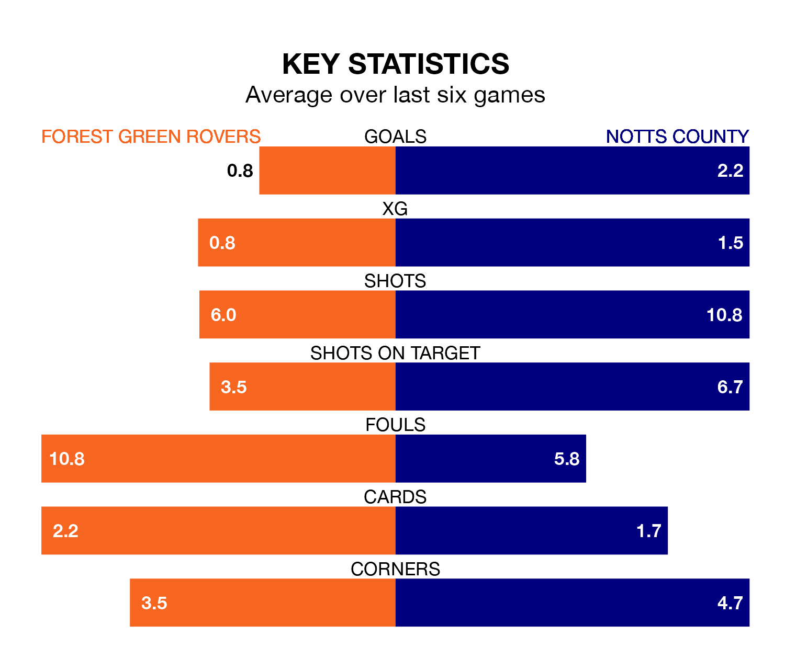

Struggling Forest Green Rovers face Notts County at the Bolt New Lawn on Saturday looking to build on a win in their last league outing.
After securing all three points with a 2-1 victory over Morecambe on April 20, the Green sit bottom of EFL League Two.
They travel to play a County side 14th in the standings, who also won their last match, 1-0 against Colchester United.
With 43 goals in 45 games so far this season, Forest Green are the league's lowest scorers with 1.0 goals per game. And they are conceding more than average, letting in 78 goals at a rate of 1.7 per game.
County, meanwhile, are above average scorers, with 2.0 goals per game, compared to a league average of 1.5. They have conceded 1.9 goals per game.
In Macaulay Langstaff, the away side have the league's sharpest shooter so far this season. He has notched 28 goals in 45 appearances.
His goal rate of one every 141 minutes is quicker than that of Mathew Stevens, Rovers' top scorer with a goal every 180 minutes, and a total of nine goals in 27 games.
The Green are in disappointing form in EFL League Two, with two wins and four losses from their last six games.
With three wins and a draw over that period, County's form is better – they have taken 10 points from 18, compared to the hosts' six.
Updated: 07:59 (UTC), 26/04/24